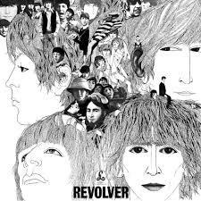

I’m Only Sleeping†is a song by the English rock band the Beatles from their 1966 studio album Revolver. In the United States and Canada, it was one of the three tracks that Capitol Records cut from the album and instead in- cluded on “Yesterday and Today”, released two months before Revolver. Credited as a Lennon–McCartney song, it was written primarily by John Lennon.